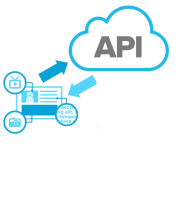

Module overview,
Overview.
JavaScript Fundamentals,
JavaScript Fundamentals.
Lab-01_JS_Objects
Lab-02_JS_functions
Resource 1.
Introduction to the DOM, CSS and Bootstrap
CSS and Bootstrap
The Browser
Lab-03_HTML_CSS
Code Samples
Introduction to React and Storybook.
ES6 top-up.
Introduction to React and Storybook.
Lab-React_Basics
Resources.
React Component model.
React Component model.
Lab_React_Data_Flow
Lab_Static_React_Apps
Resources.
Thinking in React.
Thinking in React.
ES6 top-up.
Lab-Interactive_Apps
Resources.
React Routing.
Routing.
Functional components.
Lab_React_Routing
Resources.
Introduction to Node.js
Git Overview
Node
node_lab1
Web APIs
Async Programming
Web APIs using Express
node_lab2
Mongo and Mongoose
MongoDB and Mongoose
node-lab3
Assignments.
Assignment1.
Enterprise Web Development 2019
Dr Frank Walsh, Diarmuid O'Connor, WIT
Module overview,
JavaScript Fundamentals,
Introduction to the DOM, CSS and Bootstrap
Introduction to React and Storybook.
React Component model.
Thinking in React.
React Routing.
Introduction to Node.js
Web APIs

Mongo and Mongoose
Assignments.